Manual Elvis
Sumário
Desenhando formas
Retângulos
Círculos
Elipses
Linhas/polilinhas
Vértice
Zoom e Pan
Selecionando objetos
Preenchendo com cor e borda os objetos
Mover objetos
Copiar objetos
Deletar objetos
Pontos de controle
Grid
Rotação
Salvar /Abrir .elv/Novo documento
Exportar para SVG
Desenhando Formas
Desenhar formas no Elvis é simples, basta selecionar a forma que quer desenhar no canvas em seguida clicar com o botão mais a esquerda do mouse, mover o mouse para onde deseja que o objeto termine e em seguida pressionar o botão central do mouse. Caso deseje cancelar a operação, basta pressionar o botão direito ou a tecla ESC.
Formas existentes no Elvis:
 Vertice
Vertice
Polilinhas
Retângulos
Circulo/Elipse
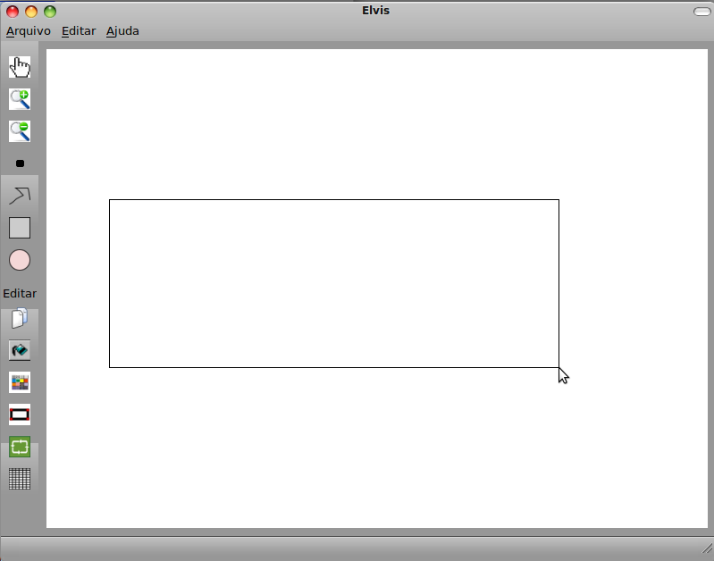
Figura
1: Desenhando um retângulo.
O desenho de círculos dá-se da mesma forma que o do retângulo bastando apenas clicar no circulo no painel esquerdo e clicar com o mouse no canvas onde será o centro do circulo e em seguida mover o mouse e clicar com o botão central do mouse. Já para desenhar uma elipse deve-se clicar no circulo do painel e pressionar a tecla Ctrll. Pressionando a tecla Ctrl você deve mover o mouse e efetuar ação semelhante aos outros objetos, ou seja, movendo o mouse para onde deseja que a elipse termine ou clicando com o botão central para finaliza-la.
Figura
2: Desenhando uma elipse.
Da mesma forma que nos exemplos anteriores é necessário antes selecionar a forma que deseja desenhar no canvas, neste caso a linha/polilinha. O desenho da linha ou polilinha se dá da seguinte forma: Primeiro o usuário deve clicar com o botão mais a esquerda do mouse no canvas para setar a posição inicial da linha, em seguida mover o mouse para a posição final da linha ou step para o inicio de outra linha constituindo assim uma polilinha. Se o usuário clicar com o botão mais a esquerda será dado continuidade a criação da polilinha se este por sua vez clicar com o botão central do mouse será finalizada a linha/polilinha e em caso de clique com o botão direito do mouse o objeto será automaticamente cancelado.
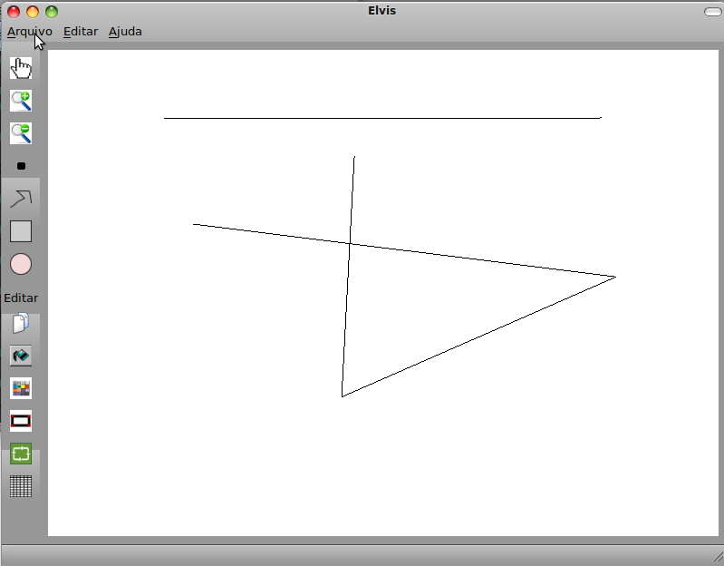
Figura
3: Criando uma lina/polilinha
Por ultimo o desenho de um vértice trata-se de apenas um ponto na tela. Selecione o vértice e clique no canvas com botão mais a esquerda do mouse e Pronto!! lá está o seu vértice.
Zoom e Pan
Zoom é o efeito de aproximação ou afastamento de uma forma, em outras palavras o aumento ou diminuição da mesma. Para realizar o zoom in ou out basta clicar continuamente no botão de zoom in ou out no painel a esquerda.
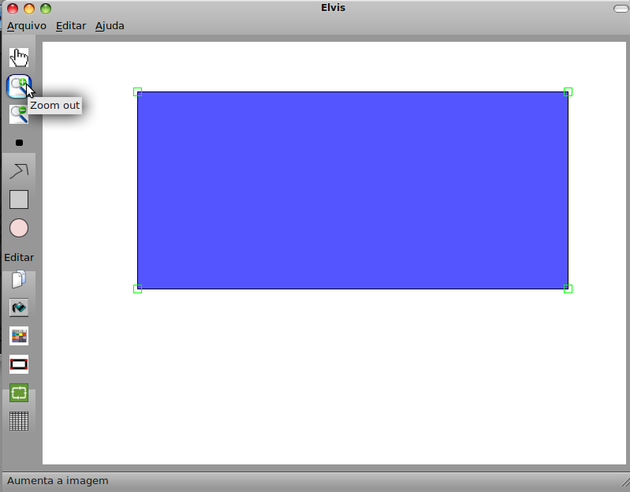
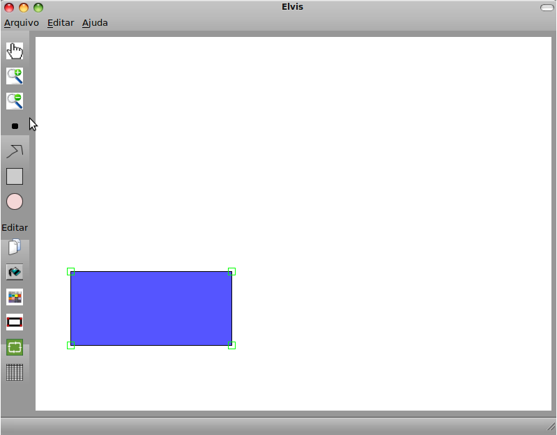
Figura
4: Exemplo zoom in e out
O Pan é o efeito de navegação no canvas, ou seja o deslocamento do canvas. No Elvis este efeito é realizado usando as teclas direcionais do teclado ( UP, DOWN,LEFT, RIGHT). Faça um teste, desenhe algo na tela e use as teclas direcionais para ver o que acontece.
Selecionando Objetos
Selecionar objetos se faz necessário para várias operações no Elvis, para tal basta cilicar no botão em forma de mão no painel esquerdo:
Feito isso baste clicar com o mouse em algum dos vértices do objeto no canvas, e pronto! Seu objeto está selecionado.
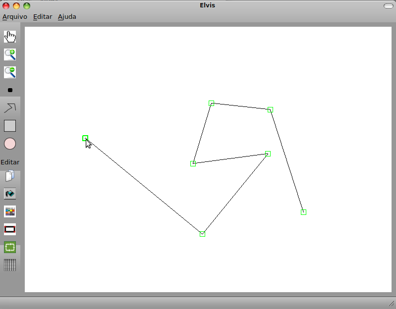
Figura
5: Exemplo de seleção.
Preenchendo com cor e bodas os objetos
Os objetos possui dois tipos de preenchimento o de bordas, ou linha e o interno. Para realizar esse preenchimento é necessário antes selecionar o objeto que se deseja preencher. Se o objeto é preencher a linha então o botão deve ser pressionado logo após o objeto ter sido selecionado. Caso seja um preenchimento interno o botão balde de tinta deve ser clicado.
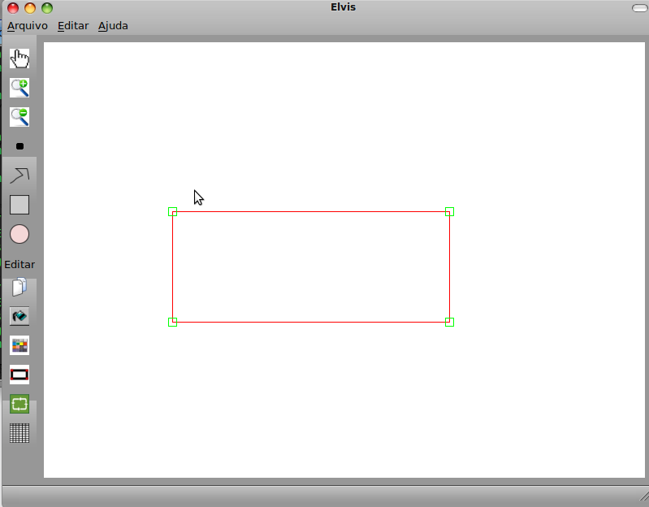
Figura
6: Exemplo de preenchimento de borda/linha.
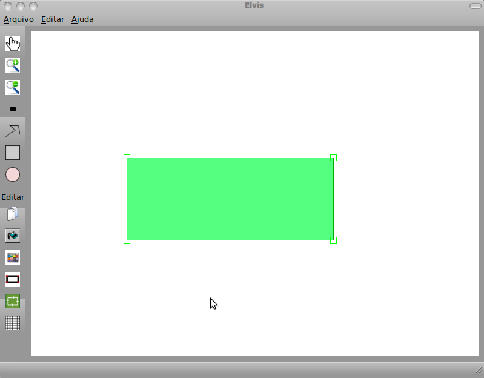
Figura
7: Exemplo de preenchimento interno.
Mover objetos
Para mover os objetos de uma posição para outra basta clicar no vértice do objeto arrastar o mouse e soltar na posição desejada e este irá se mover para lá. Lembrando que para isso o objeto deve estar selecionado.
Copiar objetos
Para copiar objetos você deve selecionar este clicar no botão de copia no painel a esquerda e mover de lugar, assim será gerada um novo objeto idêntico ao primeiro.
Deletar objetos
Para deletar um objeto selecione este e em seguida pressione a tecla delete.
Pontos de controle
Os pontos de controle destacam os vértices das formas. Para acionar os pontos de controle de todas as formas no canvas basta pressionar a o botão no painel a esquerda de pontos de controle.
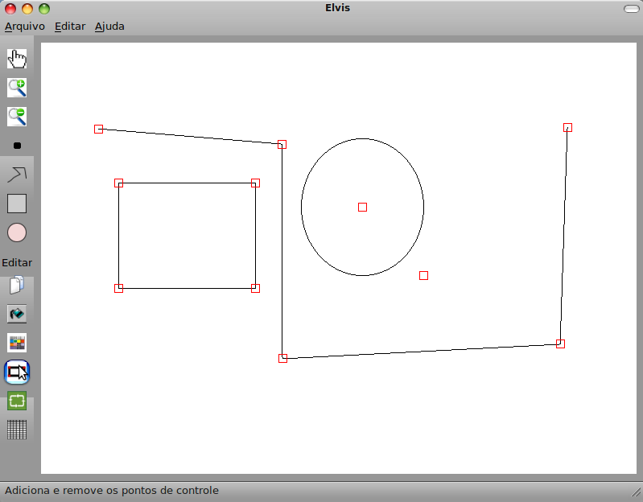
Figura
8: Pontos de controle
Grid
O grid é utilizado para ajudar o usuário a alinhar seus objetos no canvas. Para acionar o grid basta clicar no botão no painel a esquerda e selecionar as dimensões do mesmo.
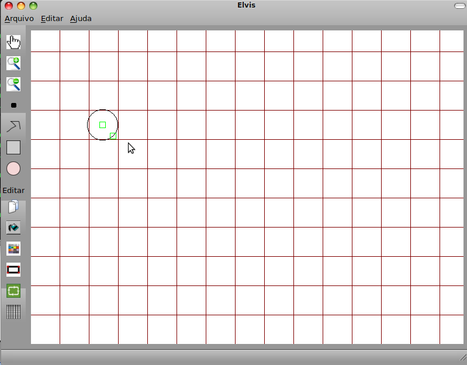
Figura
9: Grid.
Rotação
Rotaciona um objeto em torno do vértice clicado por 90°. (só funciona para círculos e polilinhas). Para rotacionar um objeto basta clicar no botão rotacionar e no vértice do objeto em torno do qual deseja que seja feita a rotação.
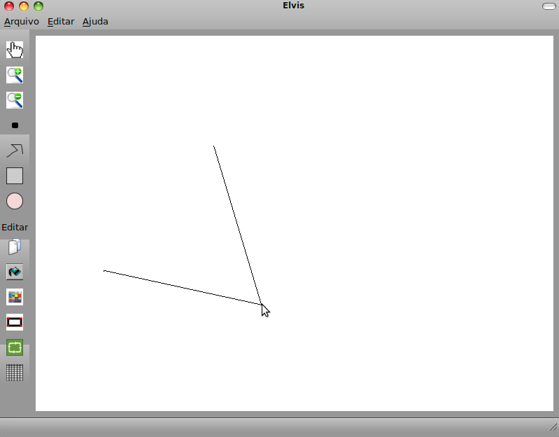
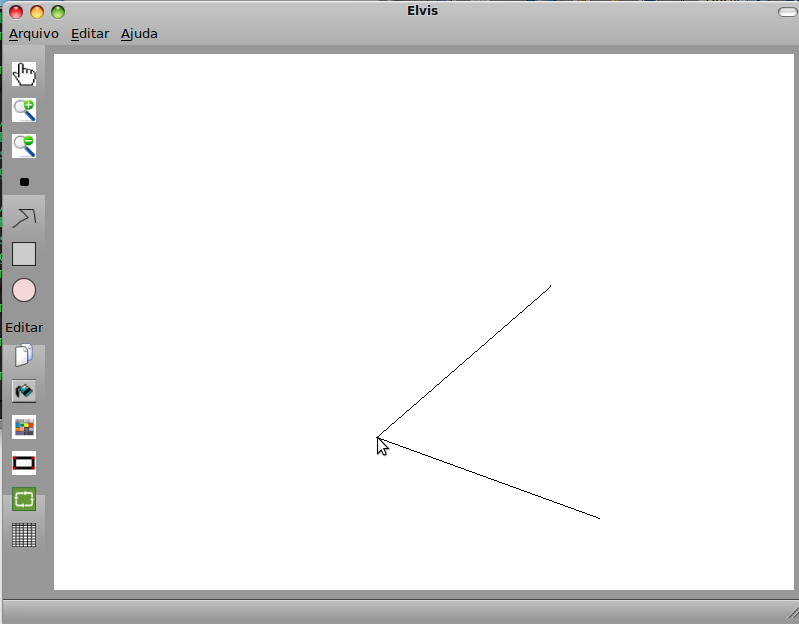
Figura
10: Exemplo de rotação.
Salvar/Abrir .elv / Novo documento
Para salvar um arquivo do Elvis, deve-se digar nomearquivo.elv na janela que aparece quando você vai no Menu Salvar. Para abrir e Exportar o procedimento é similar. Em exportar aquivo para SVG você deve digitar nomearquivo.svg. Já quando é acionado um novo documento a tela ou canvas é inicializada toda em branco, mas antes é exibida a mensagem se o usuário não deseja salvar a imagem atual.